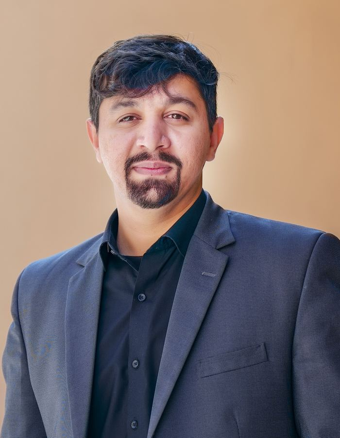

18 years in Pakistan's most extreme wilderness — from the fire-lit peaks of Karakoram to the golden silence of Hunza — chasing the precise second when light transforms earth into something sacred.
From a mobile phone in a university dorm to the world's great stages — my TEDx talk on chasing light across Pakistan's wildest frontiers, and why the story behind a frame matters more than the frame itself.

Asmar Hussain is an electronic engineer turned photographer, and a Sony Brand Ambassador for Landscape Photography Pakistan.
For 18 years, he has ventured deep into Pakistan's most extreme and unreachable places — the fire-lit summits of the Karakoram, the golden autumn valleys of Hunza, the bear-roamed silence of Deosai, and the ancient dunes of the Thar — returning with images that make the world pause and feel.
His work has been featured in National Geographic and exhibited in galleries across 15 countries. But more than the awards, it is the story behind each frame — of patience at high altitude, of waiting for the single breath of perfect light, of seeing what others walk past — that defines who he is.
For over 18 years I have photographed the wildest corners of northern Pakistan — Hunza, Skardu, the Deosai Plains, the Karakoram and beyond. I now host private and small-group photography tours and workshops for international and Pakistani photographers who want to capture these landscapes in the very best light, without the guesswork. From spring blossom season to golden autumn, you bring the camera — I handle the route, the timing, the access, the permits, the local knowledge and hands-on guidance in the field.
Every photography tour is custom-built around your goals, your season and the light — private or small group, no fixed packages, just the right place at the right hour.
I know these valleys intimately — the hidden viewpoints, the safe routes and the exact moment golden light strikes the peaks.
From Passu Cones and Rakaposhi to the Deosai Plains and Fairy Meadows — legendary spots and places few outsiders ever reach.
Permits, transport, stays, timing, on-location coaching and editing guidance — all arranged so you focus only on your photography.
All my tours and trips are run through Travelbug, the travel company I co-founded. Browse full itineraries, dates and booking there — or message me directly to craft a personalised route across northern Pakistan.
Explore Tours on Travelbug.pk ↗Recognized on the world stage for a commitment to visual storytelling that transcends borders.
Winner in the Landscape category of the Sony World Photography Awards — the world's largest international photography competition, run by the World Photography Organisation.
National · 2026First Pakistani ever to be among the winners of the prestigious PISPA award — and the only one to be named among the winners three consecutive years, 2023, 2024 and 2025.
International · 2023–2025Named the country's finest travel photographer for documenting Pakistan's landscapes, cultures and untold stories across the nation.
National · 2024Honoured as Photographer of the Year in Russia and ranked among the World's Top 5 Landscape Photographers.
International · 2023All Pakistan winner of the National Disaster Management Authority flood photography competition in 2023 and again in 2025.
National · 2023 & 2025Landscape photographs permanently displayed at the Embassy of Pakistan in Spain, with a one-month solo exhibition in Minsk, Belarus.
Diplomatic · 2023The first Pakistani appointed by Sony as their Brand Ambassador for Landscape Photography — the face of the world's leading camera brand.
Pakistan · 2022–PresentSecond prize at the international ICIMOD Hindu Kush Karakoram Pamir Landscape (Bam-e-Dunya) photography contest in Nepal.
International · 2020A month-long solo exhibition at Tokyo's Month of Photography, presenting the streets of Peshawar to Japanese audiences.
Japan · 2019First Pakistani published on the National Geographic website, with images carrying Editor's Notes consistently from 2014 to 2017.
International · 2014–2017Awarded second prize at the All World Horticulture Photography Competition held in the United Kingdom.
International · 2015Certificate of Merit at the All Pakistan Monochrome Photography Competition, alongside acceptances and honourable mentions from the Photographic Society of America.
National · 2015Every photograph in the collection is available as a hand-signed print. Choose your media — C-Print (photo paper), Giclée, Matte Paper, Canvas, or Hahnemühle 100% cotton rag (museum grade) — pick your size and frame, and receive a custom quote.
Shyok River, Khaplu, Ghanche
Signed Print · Custom QuoteSkardu, Gilgit-Baltistan
Signed Print · Custom QuoteHunza Valley, Gilgit-Baltistan
Signed Print · Custom QuoteHunza, Gilgit-Baltistan
Signed Print · Custom QuoteBroghil, Chitral
Signed Print · Custom QuoteGhizer Valley, Gilgit-Baltistan
Signed Print · Custom QuotePassu, Gilgit-Baltistan
Signed Print · Custom QuoteKatpana Desert, Skardu
Signed Print · Custom QuoteKatpana Desert, Skardu
Signed Print · Custom QuoteGilgit, Gilgit-Baltistan
Signed Print · Custom QuoteMachlu, Ghanche, Baltistan
Signed Print · Custom QuoteDomail, Minimarg
Signed Print · Custom QuoteDeosai National Park
Signed Print · Custom QuoteKumrat Valley, Upper Dir
Signed Print · Custom QuoteNorthern Pakistan
Signed Print · Custom QuoteNorthern Pakistan
Signed Print · Custom QuoteHunza, Gilgit-Baltistan
Signed Print · Custom QuoteThar Desert, Sindh
Signed Print · Custom QuoteChitral
Signed Print · Custom QuoteDera Ismail Khan, Pakistan
Signed Print · Custom QuoteGwadar, Balochistan
Signed Print · Custom QuoteBalochistan
Signed Print · Custom QuoteBalochistan
Signed Print · Custom QuoteGhanche
Signed Print · Custom QuoteGhanche
Signed Print · Custom QuoteSkardu
Signed Print · Custom QuoteSkardu
Signed Print · Custom QuoteGulshan-e-Kabir
Signed Print · Custom QuoteGilgit-Baltistan
Signed Print · Custom QuoteBalochistan
Signed Print · Custom QuotePassu, Hunza
Signed Print · Custom QuoteGulshan-e-Kabir
Signed Print · Custom QuoteHunza
Signed Print · Custom Quote12-ink pigment giclée on heavyweight fine-art stock — the archival standard for gallery work. Every print is hand-signed and includes a certificate of authenticity.
Custom QuoteWhatsApp should now be open with your chosen photograph, size and paper — including a link to the exact image. Just hit send, and Asmar will personally respond within 24–48 hours with a detailed quote. If WhatsApp didn't open, email him directly below.
Contact Directly ↗Asmar Hussain is an award-winning Pakistani landscape photographer and a Sony Brand Ambassador. Over 18 years he has photographed the Karakoram mountains, Hunza, Skardu, Deosai, and Pakistan's deserts and coast, winning international awards including the Sony World Photography Award and the Paris International Street Photography Award.
Yes. Asmar offers private, tailor-made photography tours across northern Pakistan — including Hunza, Skardu, Deosai, the Karakoram, Broghil in Chitral, and Fairy Meadows — with itineraries built around what you want to shoot and when you want to travel. Tours suit both international and enthusiast photographers.
The best time is roughly April to June for spring blossoms and lush green valleys, and September to October for golden autumn colour in Hunza and the Karakoram. High-altitude areas like Deosai and Broghil are usually accessible June to September. Winter (December to February) brings snow that closes many mountain roads.
Most nationalities need a Pakistan tourist e-visa, applied for online before travel. Citizens of the GCC countries (UAE, Saudi Arabia, Qatar, Kuwait, Bahrain and Oman) can currently enter visa-free for up to 30 days. Visa rules change, so always confirm the latest requirements on Pakistan's official online visa portal before booking.
Yes. The main photography regions of Gilgit-Baltistan — Hunza, Nagar, Skardu and Khaplu — and Chitral have strong safety records and are popular with both domestic and international travellers. On every private tour Asmar arranges local logistics, permits and access personally.
Each tour is fully tailored. Asmar plans the route, timing and shooting locations around the best light and what you want to capture, and handles local transport, access, permits and on-the-ground knowledge. You bring your camera; he handles the rest. Duration, group size and destinations are all customisable.
You can request a tailored itinerary or book a session directly via WhatsApp at +92 334 4334411, or through the contact form on this website. Share your travel dates and what you would like to photograph, and Asmar will craft a personalised plan.
Yes. Every photograph is available as a signed print in sizes from 8×10" to 24×36". You choose the media: C-Print (photo paper), Giclée, Matte paper, Canvas (gallery-wrapped) or Hahnemühle 100% cotton rag — museum grade. Each print is hand-signed and includes a certificate of authenticity. Choose an image in the Print Shop, preview it on your wall, and request a quote.
Asmar is from Dera Ismail Khan, Pakistan. His work spans northern Pakistan's mountains and valleys — Hunza, Nagar, Passu, Skardu, Khaplu, Ghanche, Deosai and Chitral — as well as the Katpana cold desert near Skardu and the Balochistan coast at Gwadar.
Every tour is privately quoted, because the cost depends on the route, the number of days, group size and the season. Rather than fixed packages, Asmar builds an itinerary to your budget and goals — share your dates and what you'd like to shoot for a personalised quote. Signed fine-art prints are sold separately and are also quoted individually.
Tours suit everyone from keen enthusiasts to professional photographers — Asmar tailors the pace and on-location coaching to your level. Any camera works, from a mirrorless or DSLR to a capable phone; a tripod plus wide and telephoto lenses help for landscapes. Drone use is possible in many areas subject to local permits, which Asmar arranges.